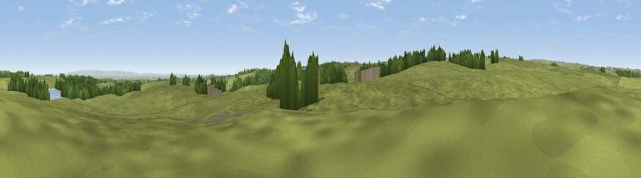

Toft Ridge
#26566 in England · top 61% of its area beats it · near Kirkby MalzeardThe view, rendered

A 360° render of this exact spot computed from the terrain model, tree cover and land cover — summer colours, afternoon light, calibrated against photographs of famous viewpoints. Real trees, hedges and buildings will differ in detail.
The panorama
Grey silhouette: terrain skyline in each direction (720 bearings, Earth curvature and refraction included). Dashed green: skyline with trees (+15 m) and buildings (+8 m) as obstacles. Blue strip: how far the ground is visible on each bearing.
Where the view opens
Wedge length = distance to the farthest visible ground on that bearing (vegetation-aware). Rings at 10, 25 and 50 km.
What fills the view
89% grassland · 7% woodland · 2% cropland · 1% water
Angular shares of the visible panorama (visual magnitude), not map area. Landscape diversity 0.19 (0–1 Shannon).
Key numbers
More beautiful places nearby
The staircase of upgrades: each row has a higher view potential than everything closer. Driving times are estimates from straight-line distance, calibrated against real road routing — check an actual route before setting out.
| Place | Direction | Drive | Score |
|---|---|---|---|
| Viewpoint near Low Laithe | SSW · 4 km | ~9 min | 50.6 |
| Clip'd Thorn Hill | E · 4 km | ~10 min | 52.4 |
| Viewpoint near Kirkby Malzeard | NNW · 5 km | ~10 min | 53.0 |
| Viewpoint near Kirkby Malzeard | NE · 5 km | ~11 min | 60.9 |
| Viewpoint near Low Laithe | S · 5 km | ~11 min | 66.1 |
| How Hill | ESE · 6 km | ~14 min | 72.9 |
| Viewpoint near Grewelthorpe | N · 7 km | ~15 min | 73.9 |
| Viewpoint near Bewerley | WSW · 11 km | ~21 min | 76.8 |
54.12654, -1.66645 · source: osm peak · position refined by local search. Computed location — check access rights before visiting.